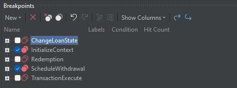
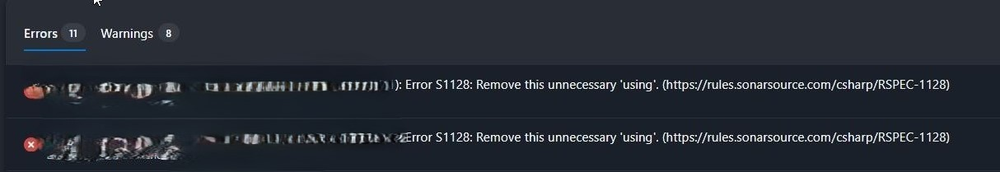
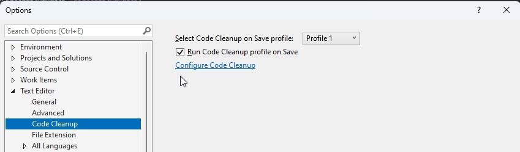

Organize Your Breakpoints like a pro
The article discusses a new feature in Visual Studio 2022 that enhances the management of breakpoints through breakpoint groups. This feature allows users to create custom collections of breakpoints, enabling easier organization and control during debugging.
Key features:
- Creation and Management: Users can create a breakpoint group by right-clicking on a breakpoint in the Breakpoints window and selecting "Add to Group > New Group." Groups can be named and described for clarity
- Actions on Groups: You can enable or disable all breakpoints in a group, set conditions, and make groups dependent on other breakpoints
- Default Group Functionality: By marking a group as the default, any new breakpoints added will automatically belong to that group
- Flexibility: Users can easily move breakpoints between groups or change the default group as project needs evolve.
Example of usage:

Code Cleanup on Save
It had been very frustrating to get failed build, because of unnecessary usings, since we needed to wait 10min to get result that build failed. Then remove usings and run again, so we will get tests results in 0.5h later than expected.

Now we have solution for this problem!

And in code cleanup configuration we need to add Remove unnecessary imports or usings, then it will be deleted after save
Azure Poor Formatter
The Azure Poor Formatter is a Visual Studio Code extension designed to format T-SQL code within Azure Data Studio. It utilizes the Poor Man's T-SQL Formatter to enhance the readability and organization of SQL scripts.
Key features:
- Formatting Options: Users can choose to "prettify," "beautify," or obfuscate their T-SQL code.
- Customization Settings: The extension offers various settings that allow users to customize the formatting process
- Indentation Options: Options for tab or space-based indentation
- Width: Set maximum characters per line
- Statement and Clause Breaks: Control over line breaks between statements and clauses.
- Comma Handling: Options for expanding comma-separated lists onto new lines and managing trailing commas
- Boolean and Case Statements: Customization for how boolean expressions and CASE statements are formatted
- Keyword Management: Features for uppercasing keywords and standardizing less common keywords.